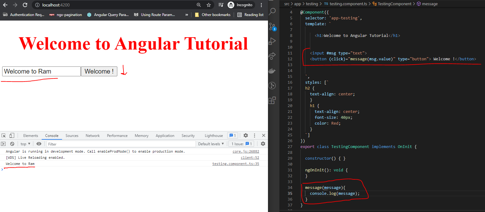

TEMPLATE REFERENCE VARIABLES:
- Template variables help you use data from one part of a template in another part of the template.
- Use template variables to perform tasks such as respond to user input or finely tune your application's forms.
- Syntax:
- In the template, you use the hash symbol, #, to declare a template variable. The following template variable,#msg , declares a phone variable on an <input> element.
- Example1:
